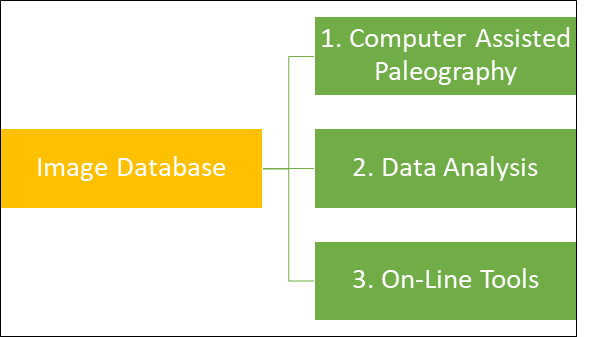

The Automated Scribal Identification Project began in 2010 as a collaboration between a professor of religious studies, a professor of computer science, and an engineering major in search of a senior thesis. In recent years, it has expanded to include a professor of visual analytics as an additional principle collaborator, researchers from Duke, UC Davis, Notre Dame, and Belgium as consultants, and 29 undergraduate and graduate research assistants. The project has received support from the Andrew Mellon Foundation, the American Council of Learned Societies, the American Academy of Religion, Mount Holyoke College, and Stanford University. This digital paleography project uses ancient manuscripts written in the Aramaic dialect of Syriac as a case study for exploring how recent advances in the digital analysis of handwriting can help scholars better ascertain a manuscript's provenance, identify manuscripts written by the same scribe, and trace out the chronological development of ancient scripts. Although the initial project goal is to substantially advance our understanding of Syriac Christianity, its greatest effect would be in providing a platform and a model for similar ventures in other languages such as Arabic, Greek, Hebrew, Latin, and Sanskrit. At present, the project consists of a core image database along with three project trajectories that utilize this data. Please click on either the following schema or the titles below to learn more about each project component.
 At the project’s center is an Image Database that includes almost 200 early, securely dated Syriac manuscripts and just under 120,000 individually identified letter images. Three avenues of research and dissemination build upon this extensive data set: 1) Computer Assisted Paleography. A series of initial forays have explored the feasibility of using this data to match pages and manuscripts written by the same scribe, as well as to estimate a given manuscript’s composition date. 2) Data Analysis. A number of published articles and on-going projects employ this image data to better understand the development of Syriac script, Syriac scribes, and Syriac manuscript culture. 3) On-Line Tools. An on-line manuscript viewer and customizable script chart generator will enable other scholars to use this dataset for their own research and will help them better localize the manuscripts that they are studying.
In addition to discussing each of these project components in greater depth, this website includes a list of project participants, a quick overview of some initial results, publications stemming from the project, and ways to contact us in order to provide feedback or gain additional information.